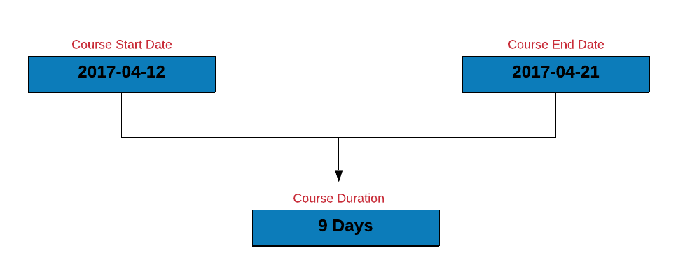
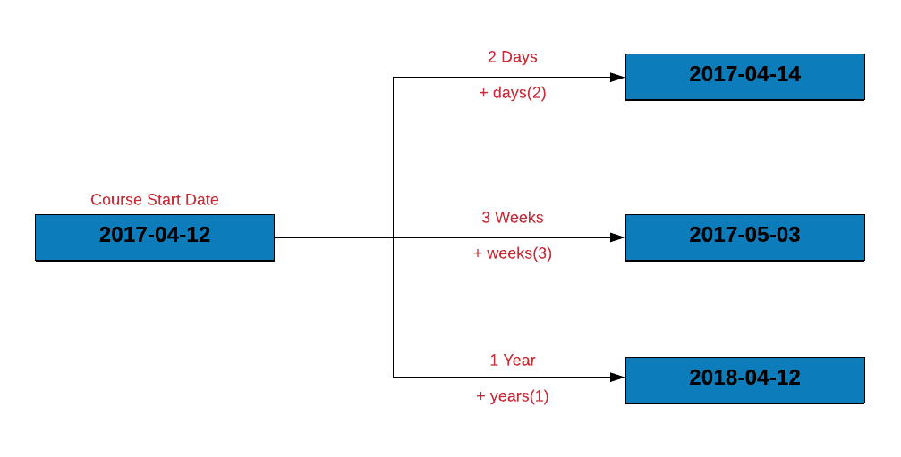
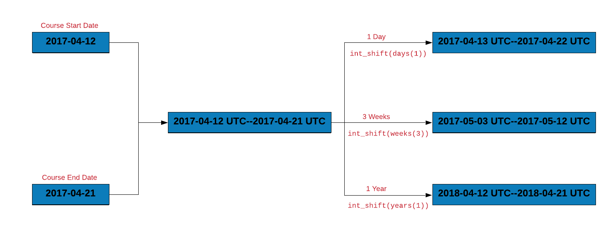
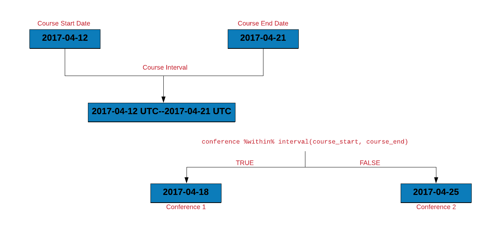
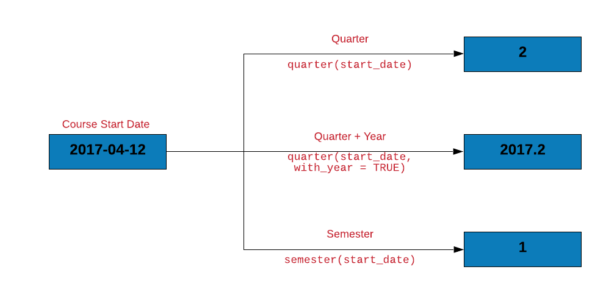
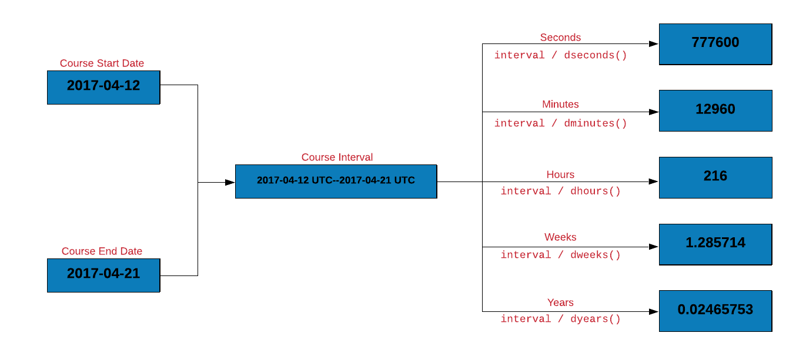

Chapter 9 Working with Date & Time
9.1 Introduction
In this chapter, we will learn to work with date/time data in R using lubridate, an R package that makes it easy to work with dates and time. We will use the following R packages:
9.2 Quick Intro
9.2.1 Origin
Let us look at the origin for the numbering system used for date and time calculations in R.
## [1] "1970-01-01 UTC"9.2.2 Current Date/Time
Next, let us check out the current date, time and whether it occurs in the am
or pm. now() returns the date time as well as the time zone whereas today()
will return only the current date. am() and pm() return TRUE or FALSE.
## [1] "2019-02-20 15:29:18 IST"## [1] "2019-02-20"## [1] FALSE## [1] TRUE9.3 Case Study
9.3.1 Data
## # A tibble: 2,466 x 3
## Invoice Due Payment
## <date> <date> <date>
## 1 2013-01-02 2013-02-01 2013-01-15
## 2 2013-01-26 2013-02-25 2013-03-03
## 3 2013-07-03 2013-08-02 2013-07-08
## 4 2013-02-10 2013-03-12 2013-03-17
## 5 2012-10-25 2012-11-24 2012-11-28
## 6 2012-01-27 2012-02-26 2012-02-22
## 7 2013-08-13 2013-09-12 2013-09-09
## 8 2012-12-16 2013-01-15 2013-01-12
## 9 2012-05-14 2012-06-13 2012-07-01
## 10 2013-07-01 2013-07-31 2013-07-26
## # ... with 2,456 more rows9.3.2 Data Dictionary
The data set has 3 columns. All the dates are in the format (yyyy-mm-dd).
- Invoice: invoice date
- Due: due date
- Payment: payment date
We will use the lubridate package to answer a few questions we have about the transact data.
- extract date, month and year from Due
- compute the number of days to settle invoice
- compute days over due
- check if due year is a leap year
- check when due day in february is 29, whether it is a leap year
- how many invoices were settled within due date
- how many invoices are due in each quarter
- what is the average duration between invoice date and payment date
9.4 Extract Date, Month & Year from Due Date
The first thing we will learn is to extract the date, month and year.

## [1] 23## [1] 3## [1] 2017Let us now extract the date, month and year from the Due column.
## # A tibble: 2,466 x 6
## Invoice Due Payment due_day due_month due_year
## <date> <date> <date> <int> <dbl> <dbl>
## 1 2013-01-02 2013-02-01 2013-01-15 1 2 2013
## 2 2013-01-26 2013-02-25 2013-03-03 25 2 2013
## 3 2013-07-03 2013-08-02 2013-07-08 2 8 2013
## 4 2013-02-10 2013-03-12 2013-03-17 12 3 2013
## 5 2012-10-25 2012-11-24 2012-11-28 24 11 2012
## 6 2012-01-27 2012-02-26 2012-02-22 26 2 2012
## 7 2013-08-13 2013-09-12 2013-09-09 12 9 2013
## 8 2012-12-16 2013-01-15 2013-01-12 15 1 2013
## 9 2012-05-14 2012-06-13 2012-07-01 13 6 2012
## 10 2013-07-01 2013-07-31 2013-07-26 31 7 2013
## # ... with 2,456 more rows9.5 Compute days to settle invoice
Time to do some arithmetic with the dates. Let us calculate the duration of a course by subtracting the course start date from the course end date.

course_start <- as_date('2017-04-12')
course_end <- as_date('2017-04-21')
course_duration <- course_end - course_start
course_duration
## Time difference of 9 daysLet us estimate the number of days to settle the invoice by subtracting the date of invoice from the date of payment.
## # A tibble: 2,466 x 4
## Invoice Due Payment days_to_pay
## <date> <date> <date> <time>
## 1 2013-01-02 2013-02-01 2013-01-15 13 days
## 2 2013-01-26 2013-02-25 2013-03-03 36 days
## 3 2013-07-03 2013-08-02 2013-07-08 5 days
## 4 2013-02-10 2013-03-12 2013-03-17 35 days
## 5 2012-10-25 2012-11-24 2012-11-28 34 days
## 6 2012-01-27 2012-02-26 2012-02-22 26 days
## 7 2013-08-13 2013-09-12 2013-09-09 27 days
## 8 2012-12-16 2013-01-15 2013-01-12 27 days
## 9 2012-05-14 2012-06-13 2012-07-01 48 days
## 10 2013-07-01 2013-07-31 2013-07-26 25 days
## # ... with 2,456 more rows9.6 Compute days over due
How many of the invoices were settled chapter the due date? We can find this by:
- subtracting the due date from the payment date
- counting the number of rows where delay < 0
## # A tibble: 1 x 1
## n
## <int>
## 1 8779.7 Is due year a leap year?
Just for fun, let us check if the due year happens to be a leap year.
## # A tibble: 2,466 x 4
## Invoice Due Payment is_leap
## <date> <date> <date> <lgl>
## 1 2013-01-02 2013-02-01 2013-01-15 FALSE
## 2 2013-01-26 2013-02-25 2013-03-03 FALSE
## 3 2013-07-03 2013-08-02 2013-07-08 FALSE
## 4 2013-02-10 2013-03-12 2013-03-17 FALSE
## 5 2012-10-25 2012-11-24 2012-11-28 TRUE
## 6 2012-01-27 2012-02-26 2012-02-22 TRUE
## 7 2013-08-13 2013-09-12 2013-09-09 FALSE
## 8 2012-12-16 2013-01-15 2013-01-12 FALSE
## 9 2012-05-14 2012-06-13 2012-07-01 TRUE
## 10 2013-07-01 2013-07-31 2013-07-26 FALSE
## # ... with 2,456 more rows9.8 If due day is February 29, is it a leap year?
Let us do some data sanitization. If the due day happens to be February 29, let us ensure that the due year is a leap year. Below are the steps to check if the due year is a leap year:
- we will extract the following from the due date:
- day
- month
- year
- we will then create a new column
is_leapwhich will have be set toTRUEif the year is a leap year else it will be set toFALSE - filter all the payments due on 29th Feb
- select the following columns:
Dueis_leap
transact %>%
mutate(
due_day = day(Due),
due_month = month(Due),
due_year = year(Due),
is_leap = leap_year(due_year)
) %>%
filter(due_month == 2 & due_day == 29) %>%
select(Due, is_leap) ## # A tibble: 4 x 2
## Due is_leap
## <date> <lgl>
## 1 2012-02-29 TRUE
## 2 2012-02-29 TRUE
## 3 2012-02-29 TRUE
## 4 2012-02-29 TRUE9.9 Shift Date
Time to shift some dates. We can shift a date by days, weeks or months. Let us shift the course start date by:
- 2 days
- 3 weeks
- 1 year

9.10 Interval
Let us calculate the duration of the course using interval. If you observe
carefully, the result is not the duration in days but an object of class
interval. Now let us learn how we can use intervals.

## [1] 2017-04-12 UTC--2017-04-21 UTC9.11 Intervals Overlap
Let us say you are planning a vacation and want to check if the vacation dates overlap with the course dates. You can do this by:
- creating vacation and course intervals
- use
int_overlaps()to check if two intervals overlap. It returnsTRUEif the intervals overlap elseFALSE.
Let us use the vacation start and end dates to create vacation_interval
and then check if it overlaps with course_interval.

9.12 How many invoices were settled within due date?
Let us use intervals to count the number of invoices that were settled within the due date. To do this, we will:
- create an interval for the invoice and due date
- create a new column
due_nextby incrementing the due date by 1 day - another interval for
due_nextand the payment date - if the intervals overlap, the payment was made within the due date
transact %>%
mutate(
inv_due_interval = interval(Invoice, Due),
due_next = Due + days(1),
due_pay_interval = interval(due_next, Payment),
overlaps = int_overlaps(inv_due_interval, due_pay_interval)
) %>%
select(Invoice, Due, Payment, overlaps)## # A tibble: 2,466 x 4
## Invoice Due Payment overlaps
## <date> <date> <date> <lgl>
## 1 2013-01-02 2013-02-01 2013-01-15 TRUE
## 2 2013-01-26 2013-02-25 2013-03-03 FALSE
## 3 2013-07-03 2013-08-02 2013-07-08 TRUE
## 4 2013-02-10 2013-03-12 2013-03-17 FALSE
## 5 2012-10-25 2012-11-24 2012-11-28 FALSE
## 6 2012-01-27 2012-02-26 2012-02-22 TRUE
## 7 2013-08-13 2013-09-12 2013-09-09 TRUE
## 8 2012-12-16 2013-01-15 2013-01-12 TRUE
## 9 2012-05-14 2012-06-13 2012-07-01 FALSE
## 10 2013-07-01 2013-07-31 2013-07-26 TRUE
## # ... with 2,456 more rowsBelow we show another method to count the number of invoices paid within the
due date. Instead of using days to change the due date, we use int_shift
to shift it by 1 day.
transact %>%
mutate(
inv_due_interval = interval(Invoice, Due),
due_pay_interval = interval(Due, Payment),
due_pay_next = int_shift(due_pay_interval, by = days(1)),
overlaps = int_overlaps(inv_due_interval, due_pay_next)
) %>%
select(Invoice, Due, Payment, overlaps)## # A tibble: 2,466 x 4
## Invoice Due Payment overlaps
## <date> <date> <date> <lgl>
## 1 2013-01-02 2013-02-01 2013-01-15 TRUE
## 2 2013-01-26 2013-02-25 2013-03-03 FALSE
## 3 2013-07-03 2013-08-02 2013-07-08 TRUE
## 4 2013-02-10 2013-03-12 2013-03-17 FALSE
## 5 2012-10-25 2012-11-24 2012-11-28 FALSE
## 6 2012-01-27 2012-02-26 2012-02-22 TRUE
## 7 2013-08-13 2013-09-12 2013-09-09 TRUE
## 8 2012-12-16 2013-01-15 2013-01-12 TRUE
## 9 2012-05-14 2012-06-13 2012-07-01 FALSE
## 10 2013-07-01 2013-07-31 2013-07-26 TRUE
## # ... with 2,456 more rowsYou might be thinking why we incremented the due date by a day before creating the interval between the due day and the payment day. If we do not increment, both the intervals will share a common date i.e. the due date and they will always overlap as shown below:
transact %>%
mutate(
inv_due_interval = interval(Invoice, Due),
due_pay_interval = interval(Due, Payment),
overlaps = int_overlaps(inv_due_interval, due_pay_interval)
) %>%
select(Invoice, Due, Payment, overlaps)## # A tibble: 2,466 x 4
## Invoice Due Payment overlaps
## <date> <date> <date> <lgl>
## 1 2013-01-02 2013-02-01 2013-01-15 TRUE
## 2 2013-01-26 2013-02-25 2013-03-03 TRUE
## 3 2013-07-03 2013-08-02 2013-07-08 TRUE
## 4 2013-02-10 2013-03-12 2013-03-17 TRUE
## 5 2012-10-25 2012-11-24 2012-11-28 TRUE
## 6 2012-01-27 2012-02-26 2012-02-22 TRUE
## 7 2013-08-13 2013-09-12 2013-09-09 TRUE
## 8 2012-12-16 2013-01-15 2013-01-12 TRUE
## 9 2012-05-14 2012-06-13 2012-07-01 TRUE
## 10 2013-07-01 2013-07-31 2013-07-26 TRUE
## # ... with 2,456 more rows9.13 Shift Interval
Intervals can be shifted too. In the below example, we shift the course interval by:
- 1 day
- 3 weeks
- 1 year

9.14 Within
Let us assume that we have to attend a conference in April 2017. Does it occur
during the course duration? We can answer this using %within% which will
return TRUE if a date falls within an interval.

9.14.1 How many invoices were settled within due date?
Let us use %within% to count the number of invoices that were settled within
the due date. We will do this by:
- creating an interval for the invoice and due date
- check if the payment date falls within the above interval
transact %>%
mutate(
inv_due_interval = interval(Invoice, Due),
overlaps = Payment %within% inv_due_interval
) %>%
select(Due, Payment, overlaps)## # A tibble: 2,466 x 3
## Due Payment overlaps
## <date> <date> <lgl>
## 1 2013-02-01 2013-01-15 TRUE
## 2 2013-02-25 2013-03-03 FALSE
## 3 2013-08-02 2013-07-08 TRUE
## 4 2013-03-12 2013-03-17 FALSE
## 5 2012-11-24 2012-11-28 FALSE
## 6 2012-02-26 2012-02-22 TRUE
## 7 2013-09-12 2013-09-09 TRUE
## 8 2013-01-15 2013-01-12 TRUE
## 9 2012-06-13 2012-07-01 FALSE
## 10 2013-07-31 2013-07-26 TRUE
## # ... with 2,456 more rows9.15 Quarter
Let us check the quarter and the semester in which the course starts.

course_start
## [1] "2017-04-12"
quarter(course_start)
## [1] 2
quarter(course_start, with_year = TRUE)
## [1] 2017.2
semester(course_start)
## [1] 1Let us count the invoices due for each quarter.
## # A tibble: 4 x 2
## quarter_due n
## <int> <int>
## 1 1 521
## 2 2 661
## 3 3 618
## 4 4 666## # A tibble: 2,466 x 4
## Invoice Due Payment Quarter
## <date> <date> <date> <dbl>
## 1 2013-01-02 2013-02-01 2013-01-15 2013.
## 2 2013-01-26 2013-02-25 2013-03-03 2013.
## 3 2013-07-03 2013-08-02 2013-07-08 2013.
## 4 2013-02-10 2013-03-12 2013-03-17 2013.
## 5 2012-10-25 2012-11-24 2012-11-28 2012.
## 6 2012-01-27 2012-02-26 2012-02-22 2012.
## 7 2013-08-13 2013-09-12 2013-09-09 2013.
## 8 2012-12-16 2013-01-15 2013-01-12 2013.
## 9 2012-05-14 2012-06-13 2012-07-01 2012.
## 10 2013-07-01 2013-07-31 2013-07-26 2013.
## # ... with 2,456 more rows9.15.0.1 Case Study

Let us also get the course interval in different units.
course_interval / dseconds()
## [1] 777600
course_interval / dminutes()
## [1] 12960
course_interval / dhours()
## [1] 216
course_interval / dweeks()
## [1] 1.285714
course_interval / dyears()
## [1] 0.02465753We can use time_length() to get the course interval in different units.

time_length(course_interval, unit = "seconds")
## [1] 777600
time_length(course_interval, unit = "minutes")
## [1] 12960
time_length(course_interval, unit = "hours")
## [1] 216as.period() is another way to get the course interval in different units.